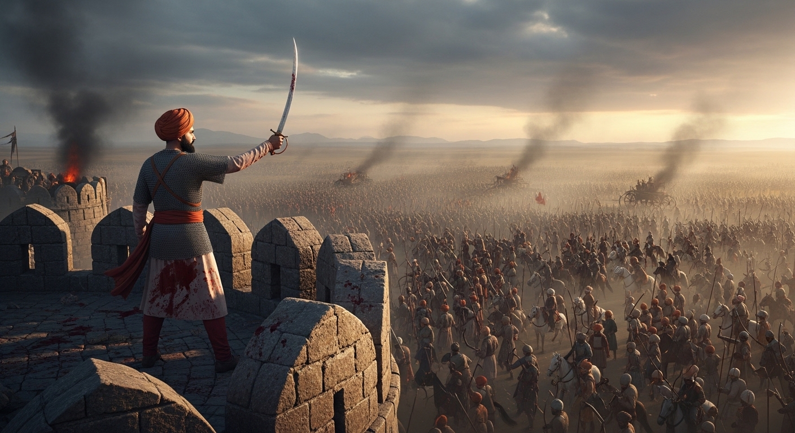
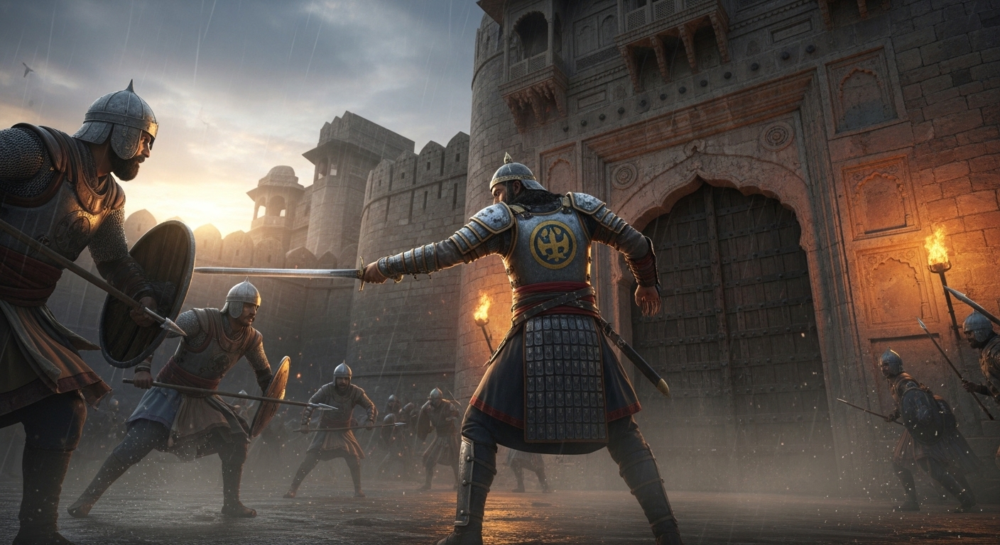

एकांकी का सारांश (Summary):
'मातृभूमि का मान' श्री हरिकृष्ण प्रेमी द्वारा रचित एक ऐतिहासिक (Historical) एकांकी है। यह एकांकी राजस्थान
(राजपूताना) के इतिहास की एक प्रसिद्ध घटना पर आधारित है। इसमें मेवाड़ के महाराणा लाखा और बूँदी (हाड़ा
राजपूतों की रियासत) के वीर योद्धा वीरसिंह के बीच हुए संघर्ष का वर्णन है। एकांकी यह संदेश देती है कि अपनी
मातृभूमि (चाहे वह छोटी हो या बड़ी) का सम्मान (मान) हर एक व्यक्ति के लिए अपने प्राणों से भी अधिक प्यारा
होना चाहिए।
1. एकांकीकार का परिचय (Author Introduction)
रचनाकार: हरिकृष्ण 'प्रेमी' (Harikrishna 'Premi')
हरिकृष्ण प्रेमी हिंदी के एक प्रसिद्ध ऐतिहासिक नाटककार हैं। उनके नाटकों में राष्ट्रीयता, देशभक्ति और
भारतीय इतिहास के गौरवशाली पलों का मार्मिक चित्रण मिलता है। उनके पात्र वीर, स्वाभिमानी और आदर्शवादी होते
हैं जो मातृभूमि के लिए हंसते-हंसते अपने प्राणों का बलिदान दे देते हैं।
2. एकांकी के मुख्य पात्र (Main Characters)
- महाराणा लाखा: मेवाड़ के गर्वित और शक्तिशाली शासक। उनके मन में सम्पूर्ण राजपूताने को
अपने अधीन करने (एक झंडे के नीचे लाने) की महत्त्वाकांक्षा है।
- राव हेमू: बूँदी के शासक, जो अपनी स्वतंत्रता से प्रेम करते हैं और मेवाड़ की अधीनता
स्वीकार करने से मना कर देते हैं।
- वीरसिंह: एकांकी का मुख्य नायक। वह मेवाड़ की सेना में एक सिपाही है, लेकिन जन्म से वह
बूँदी का रहने वाला (हाड़ा राजपूत) है। उसके लिए उसकी मातृभूमि (बूँदी) का सम्मान महाराणा लाखा की नौकरी
से कहीं बड़ा है।
- अभयसिंह: मेवाड़ का सेनापति, जो महाराणा लाखा को उचित सलाह देता है।
- चारणी (Charani): एक वीरांगना और गायिका जो अपने ओजस्वी गीतों से राजपूतों में
देशभक्ति और एकता की भावना जगाती है।
3. एकांकी की प्रमुख घटनाएँ (Key Events)
- महाराणा लाखा की शपथ: महाराणा लाखा बूँदी रियासत को मेवाड़ के अधीन करना चाहते थे, लेकिन
बूँदी के शासक राव हेमू इसके लिए तैयार नहीं थे। जिसके कारण भीषण युद्ध हुआ और महाराणा लाखा की मेवाड़ की
विशाल सेना को छोटी-सी बूँदी की सेना से हार का सामना करना पड़ा। इस हार से क्रोधित होकर महाराणा लाखा ने
भीष्म प्रतिज्ञा (शपथ) ली कि "जब तक मैं बूँदी के दुर्ग (क़िले) को मिट्टी में नहीं मिला दूँगा, तब तक
अन्न-जल ग्रहण नहीं करूँगा।"
- नकली दुर्ग का निर्माण: महाराणा की यह प्रतिज्ञा पूरी करना असंभव था क्योंकि असली बूँदी के
क़िले को तुरंत नहीं जीता जा सकता था, और बिना अन्न-जल के महाराणा की जान जा सकती थी। इसलिए सेनापति अभयसिंह
और मंत्रियों ने योजना बनाई कि मेवाड़ के ही मैदान में बूँदी का एक 'नकली (मिट्टी का) दुर्ग' बनाया जाए।
महाराणा लाखा उस नकली दुर्ग को तोड़कर अपनी प्रतिज्ञा पूरी कर लेंगे।
- वीरसिंह का स्वाभिमान: मेवाड़ की सेना में कुछ हाड़ा राजपूत (बूँदी के रहने वाले) सैनिक भी
थे, जिनमें वीरसिंह प्रमुख था। जब उसे पता चला कि मेवाड़ वाले उसकी मातृभूमि 'बूँदी' का मज़ाक उड़ाने के लिए
उसका नकली क़िला बना रहे हैं और उसे तोड़ने जा रहे हैं, तो वीरसिंह का मातृभूमि-प्रेम जाग उठा। उसने कहा,
"चाहे क़िला असली हो या नकली, वह मेरी मातृभूमि का प्रतीक है और मैं जीते जी किसी को उसका अपमान नहीं करने
दूँगा।"
- नकली दुर्ग की रक्षा में बलिदान: जब महाराणा लाखा नकली दुर्ग को तोड़ने आए, तो उन्होंने
देखा कि वीरसिंह और उसके कुछ मुट्ठीभर हाड़ा साथी उस 'मिट्टी के क़िले' की रक्षा के लिए अपनी जान देने को
तैयार खड़े थे। उन्होंने महाराणा की सेना से भयंकर युद्ध किया।
- महाराणा का हृदय परिवर्तन: वीरसिंह और उसके साथियों ने उस नकली दुर्ग को बचाते-बचाते अपने
प्राणों का बलिदान (शहादत) दे दिया। महाराणा लाखा यह देखकर काँप उठे। उन्हें अपनी झूठी शान और अहंकार पर
पछतावा हुआ। उन्होंने माना कि इन वीरों ने अपनी 'मातृभूमि का मान' रखने के लिए जो बलिदान दिया है वह
राजपूतों के इतिहास में अमर रहेगा। उन्होंने बूँदी पर अपना प्रभुत्व (कब्ज़ा) जमाने का विचार त्याग दिया।
4. महत्वपूर्ण कथन (Important Quotes)
"हम राजपूत हैं, हमारी नस-नस में वीरभूमि का रक्त बहता है। हम मातृभूमि के अपमान को कभी सहन नहीं कर सकते, चाहे
वह अपमान असली हो या नकली।"
= वीरसिंह का यह कथन उसके असीम देशप्रेम और सर्वोच्च स्वाभिमान को दर्शाता है।
"राजपूतों! हम सब एक हैं, फिर आपस में लड़कर अपनी शक्ति क्यों नष्ट करते हो?"
= चारणी का यह गीत राजपूतों में एकता स्थापित करने का संदेश देता है।
5. एकांकी का उद्देश्य (Theme)
- मातृभूमि के प्रति असीम प्रेम: एकांकी सिखाती है कि जन्मभूमि स्वर्ग से भी महान है।
मातृभूमि (बूँदी) की माटी का एक कण भी वीरों के प्राणों से ज्यादा कीमती होता है।
- सच्ची वीरता और स्वाभिमान: वीरसिंह ने मेवाड़ की नौकरी और महाराणा के क्रोध की परवाह
किए बिना अपनी छोटी-सी मातृभूमि के 'नकली क़िले' के सम्मान के लिए जान दे दी। यह सच्ची वीरता है।
- आपसी फूट के प्रति चेतावनी: एकांकी यह संदेश भी देती है कि (जैसे महाराणा लाखा अन्य
रियासतों को ज़बरदस्ती दबाना चाहते थे) अहंकार और आपसी फूट से देश कमज़ोर होता है। प्रेम और एकता ही
राष्ट्र को मज़बूत बनाते हैं।

6. परीक्षा उपयोगी प्रश्न-उत्तर (Practice Zone)
प्रश्न 1: महाराणा लाखा ने क्या प्रतिज्ञा की थी और क्यों?
उत्तर: मेवाड़ के महाराणा लाखा अपनी शक्ति के घमंड में पूरे राजपूताने को
अपने अधीन करना चाहते थे। जब छोटी-सी रियासत 'बूँदी' के राव हेमू ने उनकी अधीनता स्वीकार करने से मना कर
दिया, तो लाखा ने उन पर हमला कर दिया। परंतु इस युद्ध में महाराणा लाखा की सेना हार गई और उन्हें भागना
पड़ा। इस घोर अपमान से आगबबूला होकर महाराणा लाखा ने यह कठोर प्रतिज्ञा ली कि "जब तक मैं बूँदी के दुर्ग
(क़िले) को मिट्टी में मिलाकर ध्वस्त नहीं कर दूँगा, तब तक अन्न-जल ग्रहण नहीं करूँगा।"
प्रश्न 2: बूँदी का नकली दुर्ग क्यों बनाया गया?
उत्तर: महाराणा लाखा ने बिना अन्न-जल के बूँदी के क़िले को तोड़ने की
प्रतिज्ञा कर ली थी। लेकिन असली बूँदी क़िले को जीतना आसान नहीं था और इसमें महीनों लग सकते थे, जिससे
भूखे-प्यासे महाराणा की जान जा सकती थी। महाराणा के प्राणों की रक्षा करने और उनकी झूठी प्रतिज्ञा को पूरा
करने के लिए सेनापति अभयसिंह ने चित्तौड़ के मैदान में ही मिट्टी का एक 'नकली बूँदी दुर्ग' बनवाया, ताकि
महाराणा उसे आसानी से तोड़कर अपनी कसम पूरी कर सकें और अपना उपवास तोड़ सकें।
प्रश्न 3: वीरसिंह ने नकली दुर्ग की रक्षा के लिए अपने प्राण क्यों दे दिए?
उत्तर: वीरसिंह मेवाड़ की सेना में सैनिक था लेकिन उसकी मातृभूमि
(जन्मस्थान) 'बूँदी' थी। जब उसे पता चला कि मेवाड़ के लोग उसकी मातृभूमि का मज़ाक उड़ाने के लिए उसका नकली
क़िला बना रहे हैं, तो उसका स्वाभिमान और देशप्रेम जाग उठा। वीरसिंह का मानना था कि "मातृभूमि का प्रतीक
(चाहे नकली ही क्यों न हो) अपनी असली मातृभूमि के समान ही पूजनीय है।" वह जीते-जी अपनी जन्मभूमि का झूठा
अपमान भी नहीं सह सकता था। इसलिए उसने महाराणा की सेना से बगावत करके, अपने कुछ हाड़ा साथियों के साथ उस
मिट्टी के क़िले की रक्षा करते हुए अपने प्राणों का महान बलिदान दे दिया।